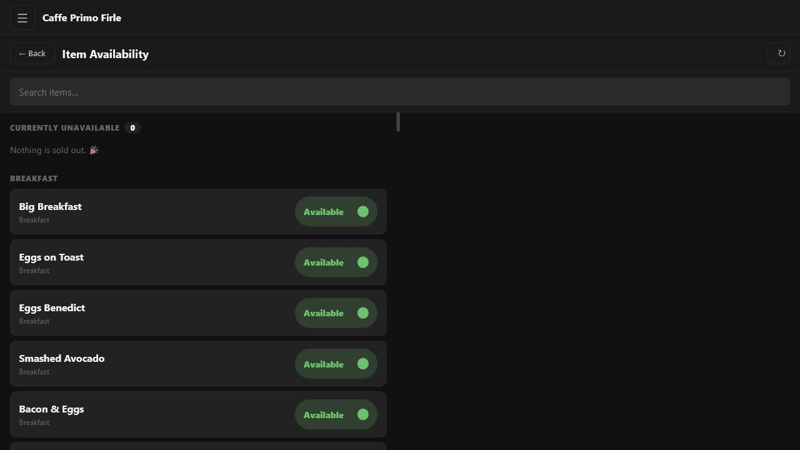
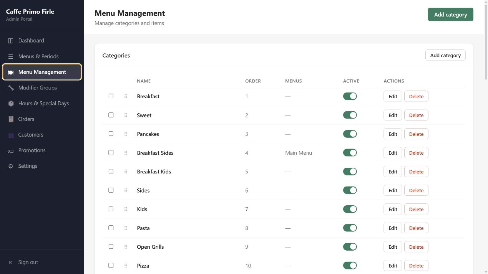

Project 04 / Full-stack operations platform
Cafe Primo Firle
A production restaurant system connecting online ordering, Stripe checkout, live staff order management, owner administration, customer data and thermal receipt printing.
Replace fragmented restaurant workflows with one connected operating system.
The platform serves customers, counter staff, kitchen staff and the owner through purpose-built interfaces. Customers browse the live menu and order for pickup; staff receive and progress paid orders; administrators manage menu data, hours, modifiers, promotions and customers; a local service bridges cloud orders to receipt-printer hardware.
Three purpose-built platforms, one restaurant system.
These captures use the real locally running applications and a local development database. Customer and order-identifying information was deliberately excluded from the portfolio images.


Specialised interfaces around one source of operational truth.
- Customer storefront. React app for menu discovery, cart state, dietary information, checkout and store-status rules.
- Admin portal. Separate React interface for menu items, modifier groups, hours, special days, orders, customer segments, discounts and campaigns.
- Staff dashboard. Tablet-focused React app using Socket.io for real-time orders; also packaged as an Android app with Capacitor.
- Printer bridge. A small Node service converts order data into ESC/POS receipts for a local thermal printer.
Design for payments, unreliable hardware boundaries and real operations.
- Confirm payment through webhooks. Stripe payment events move orders into the staff workflow instead of trusting the browser.
- Use real-time events where latency matters. Socket.io pushes new orders, status changes and sold-out updates across interfaces.
- Keep uploads outside ephemeral compute. Menu images are streamed to Cloudflare R2 rather than stored on Railway containers.
- Run database migrations before every deploy. The production start command fails fast if the PostgreSQL schema cannot be updated safely.
- Separate cloud and local responsibilities. The hosted API manages orders while the printer service stays close to restaurant hardware.
The Express API and managed PostgreSQL database run on Railway, images are stored in Cloudflare R2, and the three Vite frontends deploy as static applications. The system includes role-based authentication, Australian GST handling, public-holiday surcharges, discounts, customer records and receipt output.
Full-stack delivery across web, cloud, data and hardware.
No private credentials or internal administration links are exposed in this public case study.